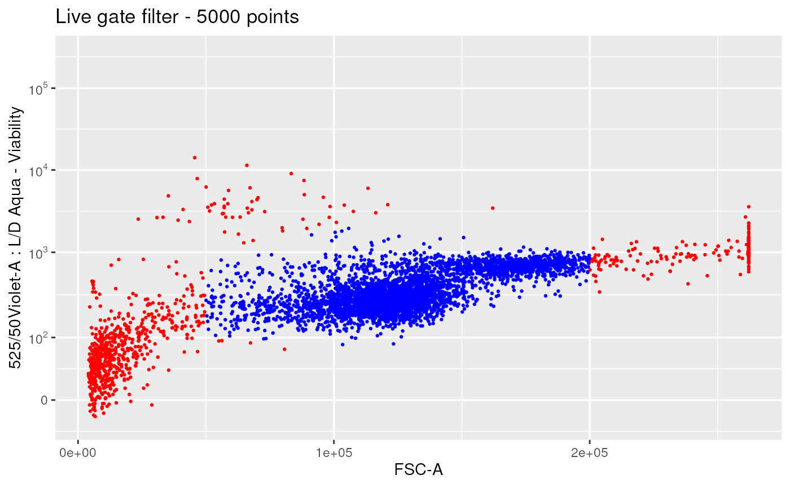
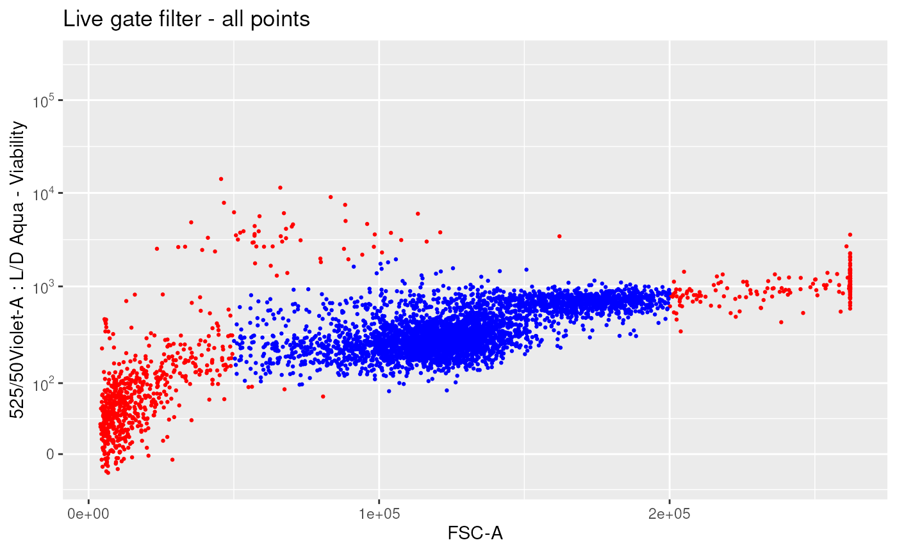

plot events of specific channels of either : flowCore::flowFrame, or flowCore::flowSet in 2D, showing the impact of applying a filter between :
a 'pre' flowframe
ggplotFilterEvents(
ffPre,
ffPost,
xChannel,
yChannel,
nDisplayCells = 10000,
seed = NULL,
size = 0.5,
xScale = c("linear", "logicle"),
yScale = c("linear", "logicle"),
xLogicleParams = NULL,
yLogicleParams = NULL,
xLinearRange = NULL,
yLinearRange = NULL,
transList = NULL,
runTransforms = FALSE,
interactive = FALSE
)a flowCore::flowFrame, before applying filter
a flowCore::flowFrame, after applying filter
channel (name or index) or marker name to be displayed on x axis
channel (name or index) or marker name to be displayed on y axis
maximum number of events that will be plotted. If the number of events exceed this number, a subsampling will be performed
seed used for sub-sampling (if any)
used by geom_point()
scale to be used for the x axis (note "linear" corresponds to no transformation)
scale to be used for the y axis (note "linear" corresponds to no transformation)
if (xScale == "logicle"), the parameters of the logicle transformation to be used, as a list(w = ..., m = ..., a = ..., t = ...) If NULL, these parameters will be estimated by flowCore::estimateLogicle()
if (yScale == "logicle"), the parameters of the logicle transformation to be used, as a list(w = ..., m = ..., a = ..., t = ...) If NULL, these parameters will be estimated by flowCore::estimateLogicle()
if (xScale == "linear"), linear range to be used
if (yScale == "linear"), linear range to be used
optional list of scale transformations to be applied to each channel. If it is non null, 'x/yScale', 'x/yLogicleParams' and 'x/yLinear_range' will be discarded.
(TRUE/FALSE) Will the application of non linear scale result in data being effectively transformed ?
If TRUE, than the data will undergo transformations prior to visualization.
If FALSE, the axis will be scaled but the data themselves are not transformed.
if TRUE, transform the scaling formats such that the ggcyto::x_scale_logicle() and ggcyto::y_scale_logicle() do work with plotly::ggplotly()
a ggplot object
data(OMIP021Samples)
ffPre <- OMIP021Samples[[1]]
# creating a manual polygon gate filter based on channels L/D and FSC-A
LDMarker <- "L/D Aqua - Viability"
LDChannel <- getChannelNamesFromMarkers(ffPre, markers = LDMarker)
liveGateMatrix <- matrix(
data = c(
50000, 50000, 100000, 200000, 200000,
100, 1000, 2000, 2000, 1
),
ncol = 2,
dimnames = list(
c(),
c("FSC-A", LDChannel)
)
)
liveGate <- flowCore::polygonGate(
filterId = "Live",
.gate = liveGateMatrix
)
selectedLive <- flowCore::filter(ffPre, liveGate)
ffL <- flowCore::Subset(ffPre, selectedLive)
# show the results
# subsample 5000 points
ggplotFilterEvents(
ffPre = ffPre,
ffPost = ffL,
nDisplayCells = 5000,
xChannel = "FSC-A", xScale = "linear",
yChannel = LDMarker, yScale = "logicle") +
ggplot2::ggtitle("Live gate filter - 5000 points")
#> Warning: Removed 3 rows containing missing values (`geom_point()`).

# with all points
ggplotFilterEvents(
ffPre = ffPre,
ffPost = ffL,
nDisplayCells = Inf,
xChannel = "FSC-A", xScale = "linear",
yChannel = LDMarker, yScale = "logicle") +
ggplot2::ggtitle("Live gate filter - all points")
#> Warning: Removed 3 rows containing missing values (`geom_point()`).
